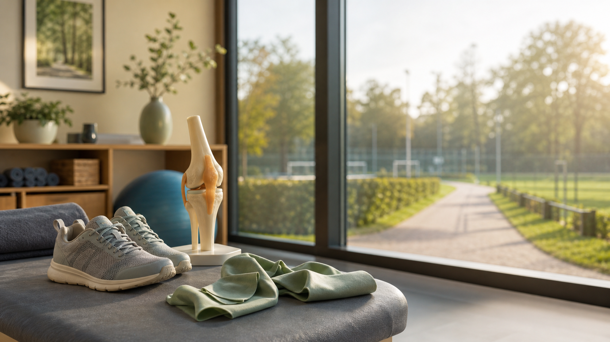

Artikel
Artrosezorg in transitie: wat betekent dit voor patiënten?
Een begrijpelijke uitleg voor patiënten over artrosezorg, bewegen, leefstijl en samenwerking tussen zorgverleners.
Artrosezorg is meer dan wachten op een operatie
Artrose van de knie of heup kan pijn, stijfheid en onzekerheid geven. Soms is een operatie uiteindelijk een goede behandeling. Maar artrosezorg bestaat niet alleen uit wachten tot een prothese nodig is. Er is vaak ook veel te winnen met goede uitleg, oefenen, bewegen en begeleiding bij leefstijl.
In het NTvG-artikel Artrosezorg in transitie wordt beschreven dat gestructureerde educatie, oefentherapie en leefstijlinterventies kunnen helpen om klachten beter te hanteren en soms een operatie uit te stellen.
Waarom bewegen juist belangrijk blijft
Veel mensen denken bij artrose aan slijtage en worden daardoor voorzichtig met bewegen. Dat is begrijpelijk, maar niet altijd helpend. Goed gekozen beweging kan spieren sterker maken, pijn verminderen en vertrouwen teruggeven. Het gaat niet om forceren, maar om stap voor stap bouwen.
Leefstijl zonder oordeel
Gewicht, conditie, slaap en dagelijkse activiteit kunnen invloed hebben op gewrichtsklachten. Dat betekent niet dat klachten iemands eigen schuld zijn. Goede artrosezorg bespreekt leefstijl zonder stigma en zoekt naar haalbare ondersteuning: wat past bij iemands lichaam, situatie en motivatie?
Samenwerking maakt de route duidelijker
De beste zorg ontstaat vaak wanneer zorgverleners goed samenwerken: orthopedisch chirurg, huisarts, fysiotherapeut, diëtist, leefstijlcoach en beweegcoach. Dan wordt duidelijker wie waarvoor kan helpen en welke stap op welk moment zinvol is.
Wat kun je bespreken in de spreekkamer?
Goede vragen zijn bijvoorbeeld: welke beweging past bij mijn knie, welke begeleiding is er in mijn regio, wanneer is een operatie wel of niet logisch, en hoe kan ik mijn conditie of gewicht bespreken zonder dat het gesprek veroordelend voelt?